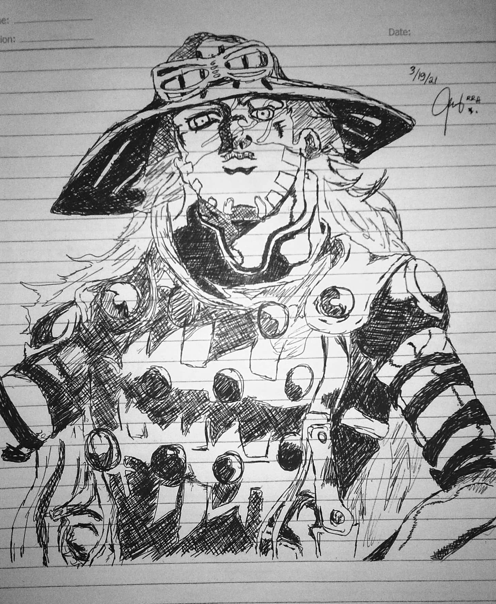
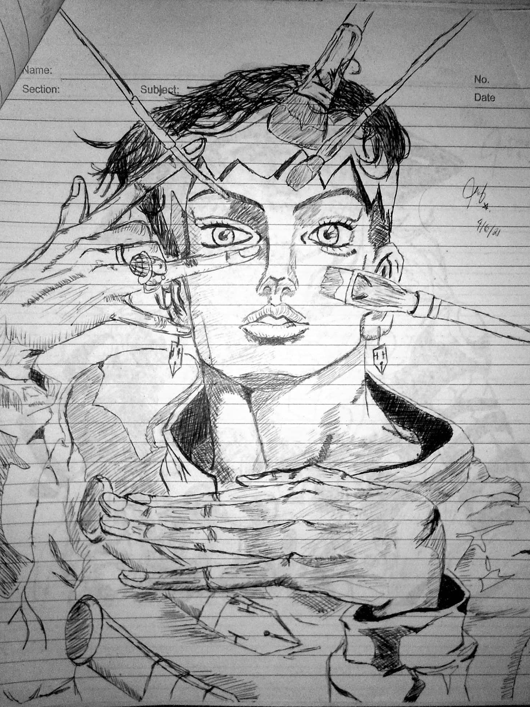
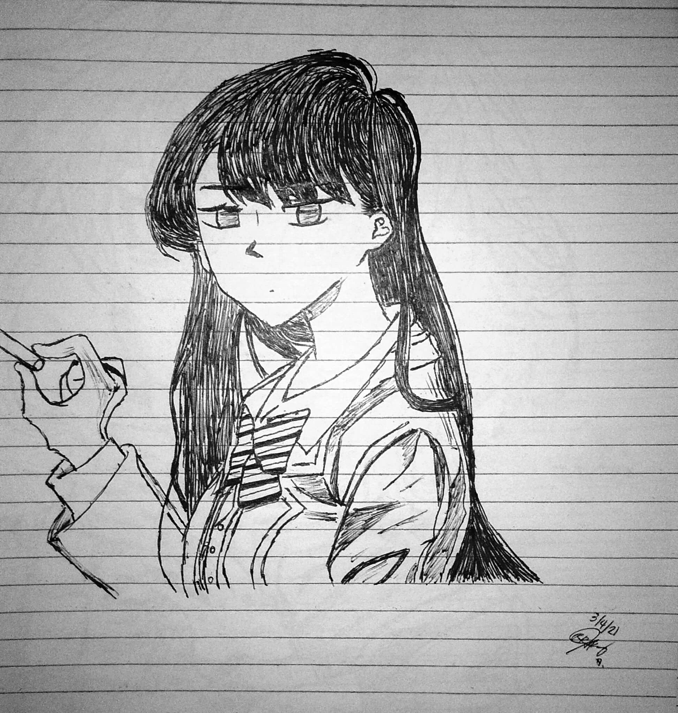
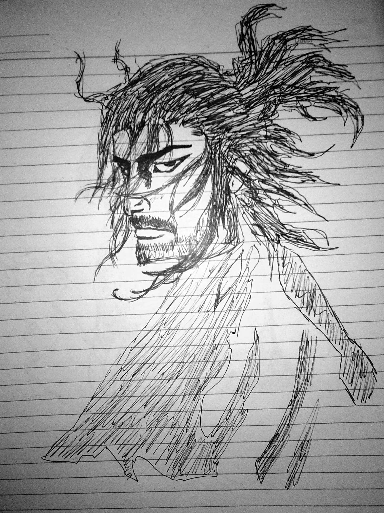
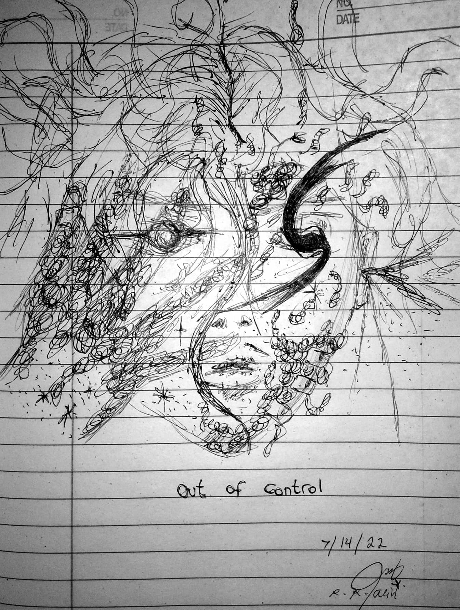
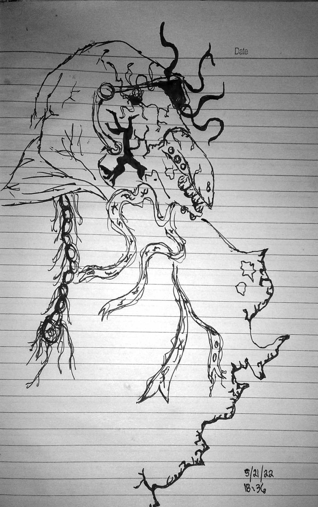
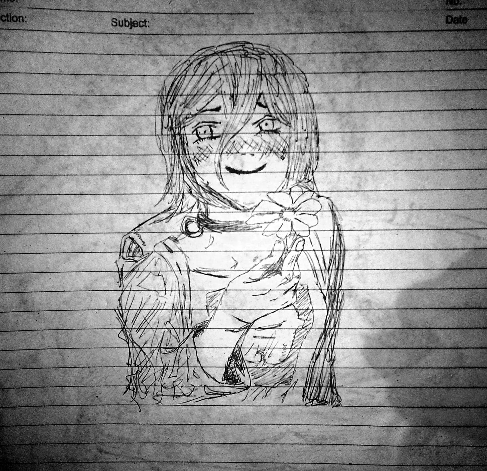
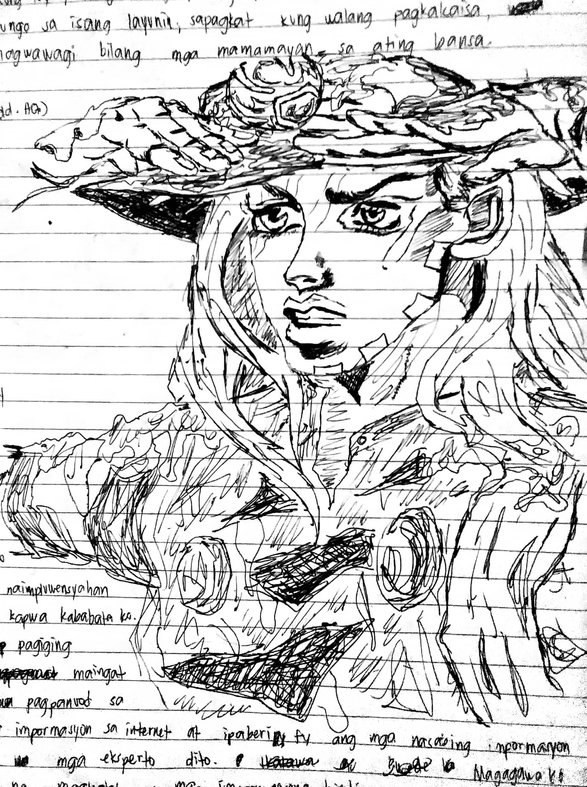
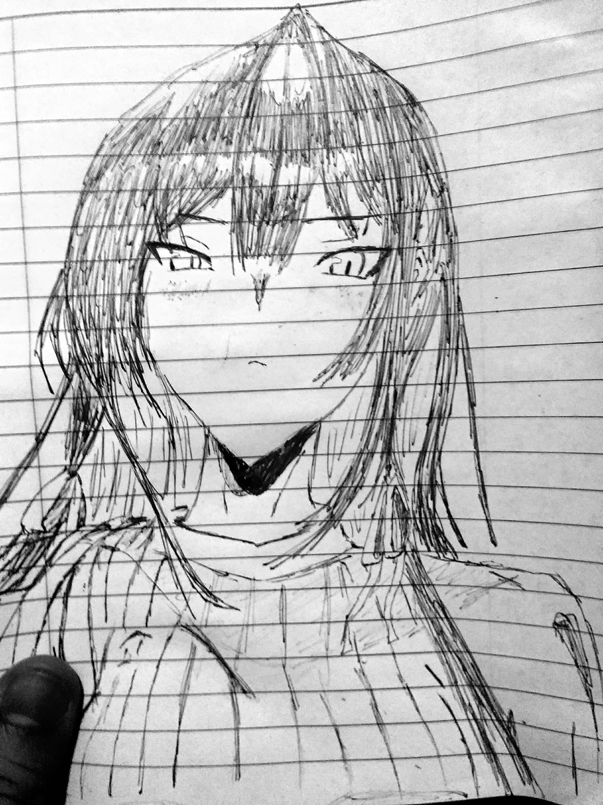

The Creative Dump
Despite my terrible sketching skills, I feel like I need to display out there some of my dumb drawings. *laughs*
Because of how lazy I am, all my sketches are done on plain paper and sometimes intermediate and yellow pad paper. I have also long been terrible at colors, which is why I thought maybe sketching was my calling (just kidding, it was just some of the few excuses I make because of my incompetence. *laughs*) Coupled with a ballpoint pen of ridiculous quality, I present to you my terrible gallery of warped art.








